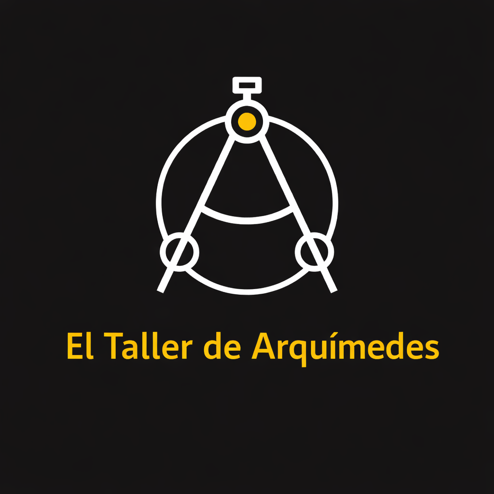

IA² · Ingeniería aplicada × inteligencia artificial
Espacio orientado al diseño, construcción y prueba de soluciones tecnológicas, con enfoque en ingeniería aplicada, prototipado, manufactura e inteligencia artificial.
Diseño y fabricación de piezas y sistemas mediante procesos como CNC, corte láser e impresión 3D.
Desarrollo rápido de soluciones funcionales integrando mecánica, electrónica y software.
Implementación de soluciones mediante programación estructurada, automatización y lógica aplicada.
Exploración e implementación de herramientas de IA orientadas a la solución de problemas y optimización de procesos.
Espacio de análisis sobre educación, formación, familia y sociedad desde una perspectiva estructurada y orientada a la comprensión de los procesos humanos.